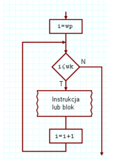
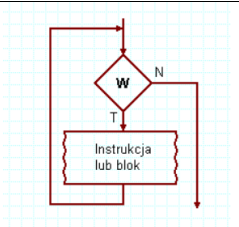
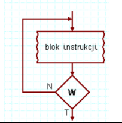

for (zainicjowanie_zmiennej; warunek_kończący_wykonywanie_pętli; zmiana_zmiennej) { kod który zostanie wykonany pewną ilość razy }
while (wyrażenie_sprawdzające_zakończenie_pętli) { ...fragment kodu który będzie powtarzany... } pętla while najpierw sprawdza warunek, potem coś wykonuje, pętla może się nie wykonać.
Do { ...fragment kodu który będzie powtarzany... } while (false) pętla do...while zawsze wykona jedną iterację, zanim sprawdzi warunek. Zawsze więc wykona jakieś zadanie
